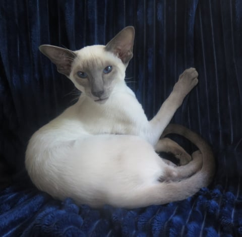
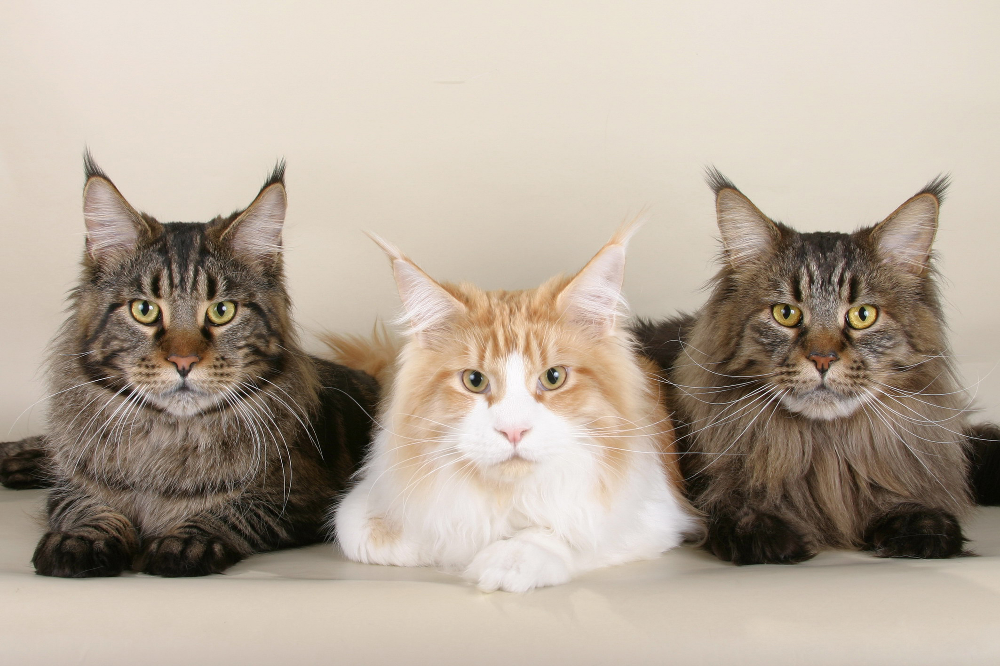
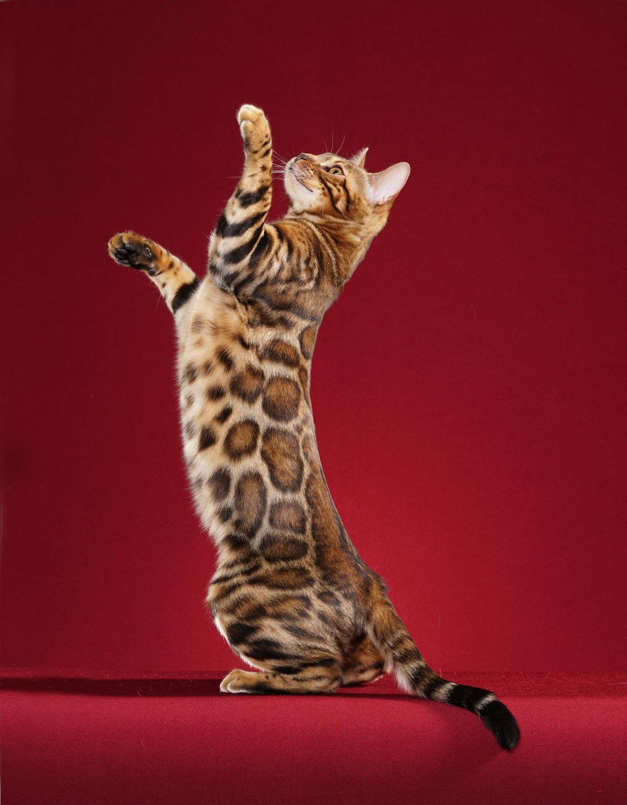
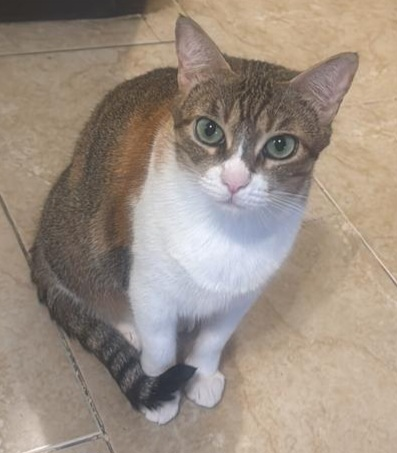
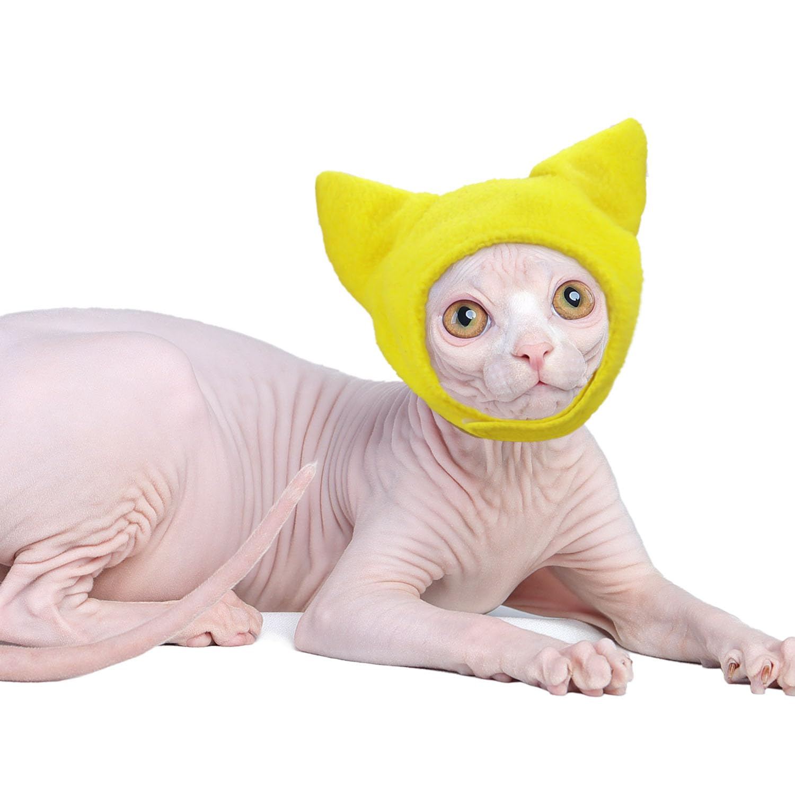

Los gatos han sido domesticados durante miles de años, y con el tiempo han surgido numerosas razas con características únicas. Estas diferencias pueden observarse en su tamaño, tipo de pelaje, comportamiento y nivel de actividad.
Algunas razas son más sociables y activas, mientras que otras prefieren la tranquilidad. Además, cada raza puede tener necesidades específicas de cuidado, como cepillado frecuente o mayor atención médica, por lo que es importante informarse antes de adoptar.

Gato muy sociable, vocal y cariñoso. Le gusta interactuar constantemente con su dueño.
De carácter tranquilo y elegante. Necesita cepillado frecuente debido a su pelaje largo.

Una de las razas más grandes. Son amigables, inteligentes y muy juguetones.

Tiene apariencia de leopardo. Es activo, curioso y requiere mucho ejercicio.

Mermelada.

Gato sin pelo, muy cariñoso y dependiente. Requiere cuidados especiales en la piel.